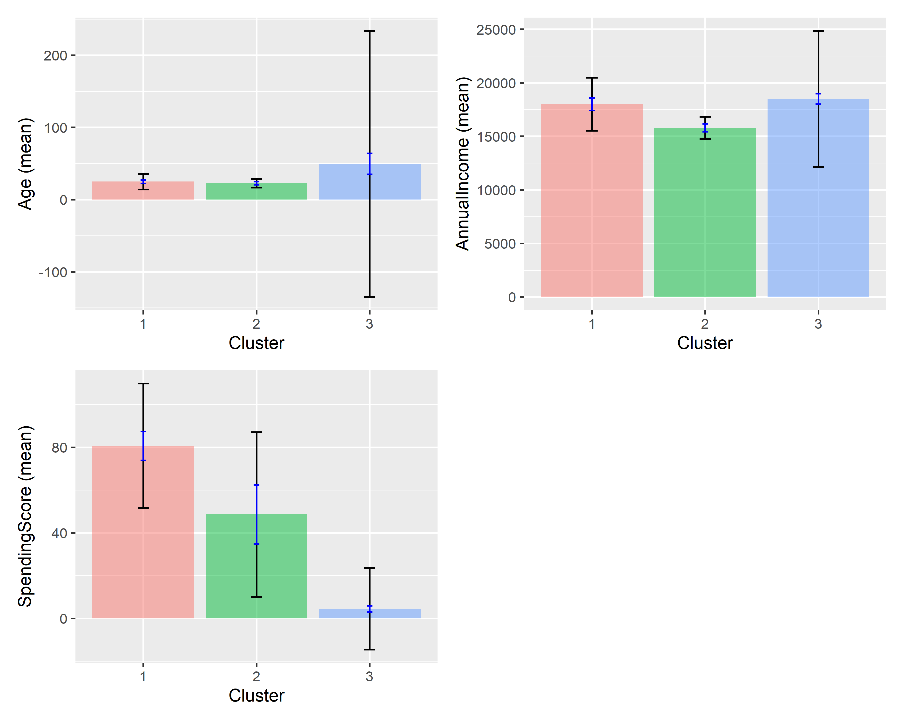

library(shiny)
ui <- fluidPage(
sliderInput("threshold", "Sales Threshold:",
min = 0, max = 100000, value = 50000),
plotOutput("salesPlot")
)
server <- function(input, output) {
output$salesPlot <- renderPlot({
# Plotting code reacts automatically when input$threshold changes
})
}
shinyApp(ui = ui, server = server)Interactive Business Analytics Using R and Shiny: The Radiant Package
Abstract
Interactive business analytics enables organisations to move beyond static reporting and towards real-time data exploration and decision-making. This handout introduces the concept of interactive analytics and examines the Radiant package, an open-source business analytics platform built on R and Shiny. Radiant provides a browser-based interface that allows users to perform data visualisation, statistical analysis, and predictive modelling without extensive programming knowledge while maintaining reproducibility through automatically generated R code. The handout further discusses the role of Shiny as the reactive framework underlying Radiant and demonstrates the practical application of interactive analytics through a customer segmentation example using K-means clustering. The discussion highlights how interactive analytical tools improve accessibility, support data-driven decision-making, and create business value through faster insight generation and improved resource allocation.
Keywords
Interactive Analytics, Radiant, Shiny, Business Analytics, Customer Segmentation
Introduction
Interactive business analytics represents a paradigm shift in how organizations approach decision-making with data (Chen et al. 2012). Traditional business analytics relies on static reports produced by data analysts and distributed to decision-makers creating delays that allows strategic opportunities to pass (Davenport et al. 2013). Interactive analytics transforms this workflow by placing analytical capability directly in the hands of business users , enabling real-time exploration, hypothesis testing, and discovery-oriented analysis that static reports cannot support (Few 2013; Shneiderman 1996).
By reducing dependency on data analysts, organizations can scale analytical capability across broader populations (Chen et al. 2012). Interactive tools democratize access to insights, enabling business professionals without statistical training to conduct meaningful analyses (Wickham 2021). Accelerating decision-making cycles and encouraging data-driven organizational culture (Few 2013). The Radiant package operationalizes these principles through a browser-based interface built on R and Shiny, providing both a point-and-click interface for accessibility and underlying R code for reproducibility (Nijs 2024; Chang et al. 2021).
The Radiant Package: Interactive Analytics in Practice
Radiant is an open-source R package that provides a browser-based platform for business analytics (Nijs 2024). Developed by Vincent Nijs and distributed freely via GitHub and CRAN, Radiant transforms R from a command-line statistical tool into a point-and-click analytics platform. Users launch Radiant from R, which opens a local web server displaying an interactive interface. All computations occur in R; the interface merely provides access to R’s analytical capabilities without requiring users to write code.
Core Functionality
Radiant organizes analytical tasks into several integrated modules (Nijs 2024):
- Data: Importing, cleaning, and transforming datasets.
- Basics: Exploratory analysis and data visualisation.
- Model: Regression and predictive analytics.
- Multivariate: Cluster analysis, factor analysis, and principal component analysis.
- Report: Automatic generation of reproducible analytical outputs.
All operations generate corresponding R code, making workflows transparent and reproducible. This dual nature point-and-click interface for accessibility, generated code for reproducibility that makes Radiant suitable for both business professionals and students developing analytical skills.
Technical Foundation: Shiny and Reactivity
Radiant’s interactivity depends on Shiny, an R framework for building interactive web applications (Chang et al. 2021). Shiny implements reactive programming, where outputs automatically update when inputs change, eliminating the need for “Refresh” buttons or manual recalculation. When a Radiant user adjusts a parameter slider, Shiny detects the change, recalculates dependent computations, and updates the display, all within milliseconds (Wickham 2021). The following code demonstrates the basic structure of a shiny application:
The ui component defines what users see, server defines how the application responds, and shinyApp() combines both. For organizations requiring custom workflows or branding, Shiny can be deployed via shinyapps.io (free tier), Shiny Server (open-source), or RStudio Connect (enterprise), making it a flexible foundation beyond Radiant (Chang et al. 2021).
Practical Application: Customer Segmentation Analysis
Customer segmentation divides a customer base into distinct, internally homogeneous groups for targeted marketing, personalized service, and resource allocation (Smith 1956; Wedel and Kamakura 2000). K-means clustering is a widely-used segmentation method that partitions customers into k groups by minimizing within-group variation (Hartigan and Wong 1979). This section demonstrates customer segmentation using Radiant with a practical example.
Data and Methods
Consider a retail organization with 100 customers described by three variables: age (18–70 years), annual income ($30,000–$90,000), and spending score (1–100, reflecting purchase frequency and amount). The organization seeks to identify customer segments for targeted marketing campaigns. K-means clustering partitions customers into k=3 segments by minimizing the sum of squared distances from each customer to their segment’s center, revealing groups with distinct demographic and behavioral characteristics (Wedel and Kamakura 2000; Punj and Stewart 1983).
Performing Analysis in Radiant
Customer segmentation in Radiant follows a point-and-click workflow through the Multivariate module. Users do not write code manually. Radiant executes the analysis through its graphical interface and generates the underlying R code automatically.
Using Radiant’s Multivariate module, users perform clustering in four steps:
- Load data: Import
customer_data.csvthrough Radiant’s Data module - Select variables: Choose Age, AnnualIncome, and SpendingScore as clustering variables
- Specify parameters: Set number of clusters k=3, choose k-means algorithm, set random seed for reproducibility
- Run analysis: Click “Estimate” to perform clustering
Step 1 - Launch Radiant:
library(radiant)
radiant()Step 2 — Load data: Navigate to Data → Manage → Load data → select customer_data.csv → click Load.
Step 3 — Verify the dataset: Go to Data → View and confirm these columns are present:
| Age | AnnualIncome | SpendingScore |
|---|---|---|
| 19 | 15000 | 39 |
| 21 | 15000 | 81 |
Step 4 - Configure clustering: Go to Multivariate → Cluster → select variables: Age, AnnualIncome, SpendingScore → Method: K-means → k = 3 → click Estimate.
Step 5 - Observe interactive output: Radiant displays cluster results, sizes, means, visual plots, and summary statistics. Changing k from 3 to 4 updates all outputs instantly - this is Shiny’s reactivity in action.
The R code Radiant generates automatically in the Report tab reveals the underlying computation:
library(radiant)
library(tidyverse)
customer_data <- read.csv("customer_data.csv")
km_result <- kmeans(
x = customer_data[, c("Age", "AnnualIncome", "SpendingScore")],
centers = 3, nstart = 25, iter.max = 10,
algorithm = "Hartigan-Wong"
)
customer_data$Segment <- factor(km_result$cluster)
ggplot(customer_data,
aes(x = AnnualIncome, y = SpendingScore, color = Segment)) +
geom_point(size = 3, alpha = 0.6) +
labs(title = "Customer Segments",
x = "Annual Income ($)", y = "Spending Score") +
theme_minimal() +
scale_color_manual(values = c("#E69F00", "#56B4E9", "#009E73"))
customer_data %>%
group_by(Segment) %>%
summarise(
Count = n(),
Mean_Age = round(mean(Age), 1),
Mean_Income = round(mean(AnnualIncome), 0),
Mean_Spending = round(mean(SpendingScore), 1),
.groups = 'drop'
)
Interpreting Results and Business Application
K-means clustering typically reveals three segments corresponding to distinct customer profiles (Punj and Stewart 1983):
- Segment 1 - High-Value Customers: High income, high spending score. Marketing strategy: premium products, loyalty programmes, personalized service.
- Segment 2 - Budget-Conscious Customers: Lower income, lower or moderate spending. Marketing strategy: value bundles, promotional discounts, cost-conscious positioning.
- Segment 3 - Growth Potential Customers: Good income, low spending score. Marketing strategy: personalised campaigns to increase engagement and convert latent purchasing power.
Radiant’s interactive interface enables stakeholders to explore alternative segmentation approaches (testing different k values, alternative variables) before implementing decisions (Nijs 2024).
Getting Started with Radiant
Users new to Radiant should follow these steps:
First, install and load Radiant in R:
install.packages("radiant")
library(radiant)
radiant() # Launches Radiant in browserSecond, explore Radiant’s tutorials and documentation. The official Radiant documentation at https://radiant-rstats.github.io/docs/ provides comprehensive guides. The “Report” tab in Radiant displays R code underlying all analyses, enabling users to learn R programming by examining generated code (Nijs 2024).
Third, apply Radiant to real analytical questions in your organization. Starting with straightforward visualization and summary statistics builds familiarity before progressing to more complex analyses like regression and clustering.
Finally, examine generated R code and modify it for your specific needs. Many Radiant users begin with the graphical interface, graduate to examining generated code, and eventually write custom R scripts for specialized analyses (Nijs 2024).
Conclusion
Interactive business analytics powered by tools like Radiant addresses fundamental organizational challenges in decision-making. By reducing delays in analytical workflows, democratizing analytics access, and supporting exploratory data analysis, interactive tools enable faster, more informed decisions (Chen et al. 2012; Few 2013). Radiant operationalizes these principles through a browser-based interface that makes sophisticated R-based analyses accessible to business professionals without programming expertise (Nijs 2024). Whether through Radiant’s point-and-click interface or custom Shiny applications, interactive analytics represents the future of business decision-making, and students and professionals who develop skills position themselves as valuable contributors to data-driven organizations (Wickham 2021).
References
Chang, Winston, Joe Cheng, JJ Allaire, et al. 2021. Shiny: Web Application Framework for r. https://CRAN.R-project.org/package=shiny.
Chen, Hsinchun, Roger H. L. Chiang, and Veda C. Storey. 2012. “Business Intelligence and Analytics: From Big Data to Big Impact.” MIS Quarterly 36 (4): 1165–88.
Davenport, Thomas H., Jeanne G. Harris, and Robert Morison. 2013. Analytics at Work: Smarter Decisions, Better Results. Harvard Business Press.
Few, Stephen. 2013. Information Dashboard Design: Displaying Data for at-a-Glance Monitoring. 2nd ed. Analytics Press.
Hartigan, J. A., and M. A. Wong. 1979. “Algorithm AS 136: A k-Means Clustering Algorithm.” Journal of the Royal Statistical Society. Series C (Applied Statistics) 28 (1): 100–108.
Nijs, Vincent. 2024. Radiant: Business Analytics Using r and Shiny. https://github.com/radiant-rstats/radiant.
Punj, Girish, and David W. Stewart. 1983. “Cluster Analysis in Marketing Research: Review and Suggestions for Application.” Journal of Marketing Research 20 (2): 134–48. https://doi.org/10.2307/3151680.
Shneiderman, Ben. 1996. “The Eyes Have It: A Task by Data Type Taxonomy for Information Visualizations.” Proceedings of IEEE Symposium on Visual Languages, 336–43.
Smith, Wendell R. 1956. “Product Differentiation and Market Segmentation as Alternative Marketing Strategies.” Journal of Marketing 21 (1): 3–8.
Wedel, Michel, and Wagner A. Kamakura. 2000. Market Segmentation: Conceptual and Methodological Foundations. Springer.
Wickham, Hadley. 2021. Mastering Shiny: Build Interactive Apps, Reports, and Dashboards Powered by r. O’Reilly Media.
Affidavit
I hereby affirm that this submitted paper was authored unaided and solely by me. Additionally, no other sources than those in the reference list were used. Parts of this paper, including tables and figures, that have been taken either verbatim or analogously from other works have in each case been properly cited with regard to their origin and authorship. This paper either in parts or in its entirety, be it in the same or similar form, has not been submitted to any other examination board and has not been published.
I acknowledge that the university may use plagiarism detection software to check my thesis. I agree to cooperate with any investigation of suspected plagiarism and to provide any additional information or evidence requested by the university.
Submission Checklist
GitHub Profile
Presentation url
Nwanneka Genevinne Nnakwuzie, June 16, 2026, Cologne, Germany